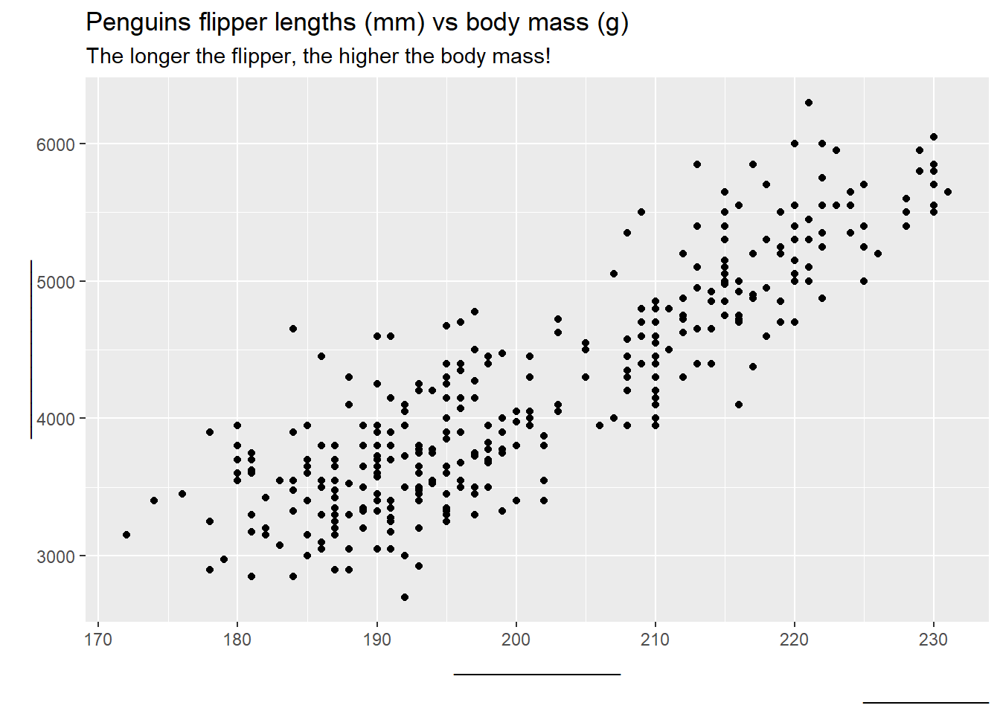
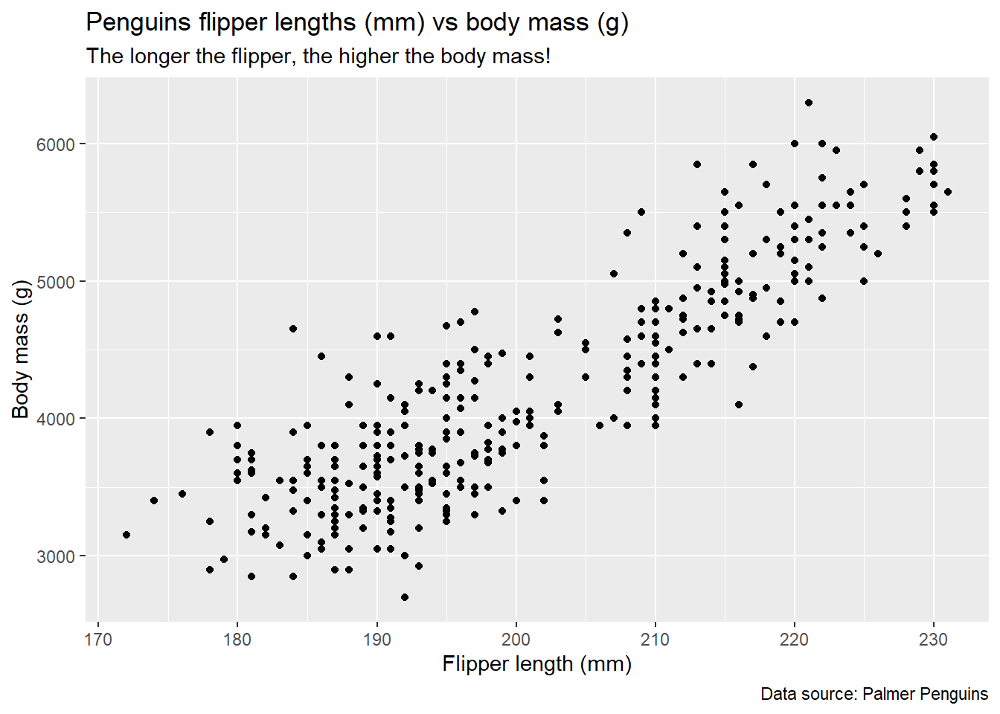
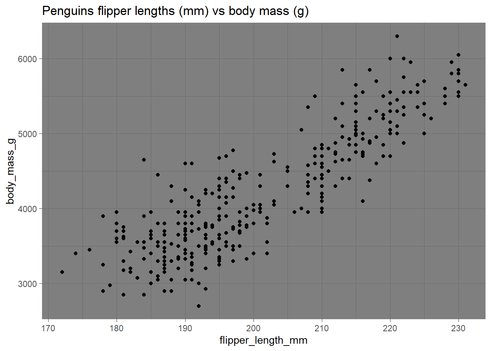
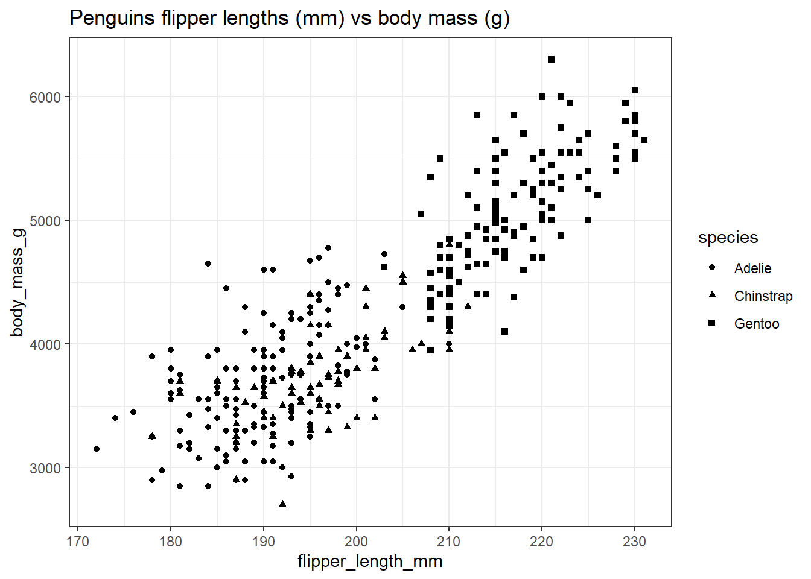

library(dplyr)
library(ggplot2)
library(palmerpenguins)Tutorial: ggplot introduction
Research Practicum in CSS
This is an experimental version of the tutorial.
If you spot any errors, please let me know in the forum, so I can fix it.
Welcome to this interactive tutorial on the ggplot2 package in R!
ggplot2 is one of the most popular and powerful tools for creating data visualizations in R. It is part of the tidyverse ecosystem and is built on the Grammar of Graphics, which provides a systematic approach to mapping data to aesthetic attributes like position, color, and size.
🎯 What You’ll Learn
In this tutorial, you’ll explore the basics of ggplot2, including:
Let’s get started!
ggplot has layers
In ggplot2, layers are the building blocks of a plot. Each layer adds specific elements to the visualization, such as data points, lines, bars, or annotations. By combining multiple layers, you can create complex and customized plots. This also means that the order of layers matters as they get put on top of each other.

General ggplot syntax
The general ggplot syntax looks as follows:
ggplot(data = data, mapping = aes(x = x_variable, y = y_variable)) +
geom_*() +
other_options()💡 There are two important things to notice:
The first argument of
ggplotisdata, which means we can also pipe (|>) our datasets into ggplot directly.Any additional function (layer) is added with a
+(not a|>)
We can thus rewrite the code above as:
data |>
ggplot(mapping = aes(x = x_variable, y = y_variable)) +
geom_*() +
other_options()Building our first plot
First, we load the required packages:
Next, let’s quickly look at our data. We will be using a dataset about penguins in Antartica. The dataset is included in a palmerpinguins package. If you want to explore it on your own, you can get it with install.packages("palmerpenguins") and the load it with a library() function.
This is how our data looks:
Interacting with this tutorial
Click on Run code to execute the code and to observe the differences. You can also modify the code - don’t worry, you can always go back to the original version by clicking on the Start Over button.
Try it out! Call glimpse(penguins) in the code chunk above.
Data
Let’s start by building our first plot (a scatterplot). We will build it iteratively, adding one layer at a time.
First, we need to tell R what data we want to use for plotting. Run the following code chunk to see what happens!
Once you’ve run the code chunk above, we should be able to see a gray rectangle. That’s because even though we told R which data to use, we did not tell it what should be plotted where. We need to specify the aesthetics for this.
Rewritting our code with pipes
Aesthetics
Next, we need to specify what goes where. We will do this inside the aes function. Map flipper length to x-axis, and body_mass_g to y-axis.
We are making progress! The x- and y-axes now have labels (shown as column names) and some axis ticks (170, 180, 190 etc. on the x-axis and 3000, 4000, 5000 etc. on the y-axis), which are based on the columns we provided.
Geoms
The next step is to tell ggplot how should our data be represented - Should your data be plotted as lines, bars, points, boxplots, distributions, or something else? Since we want to make a scatterplot, each data point should be represented by a point. We can specify this by calling a geom_*() layer, in particular the geom_point() layer.
🎊 Ta-dah! Our plot now has some observations!
What other geoms are there?
There are many, many other geoms that you can use. Some of the more common ones are:
geom_bar()andgeom_col()geom_line()andgeom_smooth()geom_histogram()andgeom_density()geom_boxplot()andgeom_violin()geom_sf()(for maps)
You can see other geom_* functions available in ggplot here. There are also many specialized packages for additional plots such as ggridges (for distributions), ggraph (for networks), or plotly (for interactive plots). Visit the R graph gallery to learn more.
Adding labels
We managed to show our data. Now we also need to communicate what is happening in our plot. Let’s add some labels. We can do this with the labs() function. There are multiple arguments that we could specify - such as title, subtitle, x, y, or caption.
To make a title, we can execute this code chunk:
🧠 Try it yourself
Fill in the blanks (______) in the code to add subtitle, caption, and change the labels of x and y axes.
Hint
Fill in the blanks between the quotation marks.
ggplot(data = penguins,
aes(x = flipper_length_mm,
y = body_mass_g)) +
geom_point() +
labs(title = "Penguins flipper lengths (mm) vs body mass (g)",
subtitle = "The longer the flipper, the higher the body mass!",
caption = "_____________",
x = "______________",
y = "_______________")
Solution
Fill in the blanks between the quotation marks.
ggplot(data = penguins,
aes(x = flipper_length_mm,
y = body_mass_g)) +
geom_point() +
labs(title = "Penguins flipper lengths (mm) vs body mass (g)",
subtitle = "The longer the flipper, the higher the body mass!",
caption = "Data source: Palmer Penguins",
x = "Flipper length (mm)",
y = "Body mass (g)")
Themes
So far, we changed mainly how our data is displayed. But we may also want to make our plots look nicer in general. Theme functions are used to control the non-data elements of a plot, such as text, gridlines, background, and axes. There are several pre-defined themes that your can use, such as theme_minimal().
🧠 Try it yourself
Modify the code chunk below to experiment with different themes. Some of the possibilites are: theme_bw(), theme_linedraw(), or theme_dark(). You can see all the available themes that get loaded with ggplot2 here.
Hint
Try putting theme_dark() instead of the _____.
Solution
ggplot(data = penguins,
aes(x = flipper_length_mm,
y = body_mass_g)) +
geom_point() +
labs(title = "Penguins flipper lengths (mm) vs body mass (g)") +
theme_dark()
More pre-defined themes?
To get more ready-made themes, you can install the ggthemes package. You can view the available themes on the website of the package.
Existing themes are not good enough for you? Make your own!
You can also build your own theme or overwrite existing themes with theme() layer. Anything you see in your plot can be customized.
For example, I can enlarge the title text of the plot with:
Alternatively, I can use one of the pre-defined themes as a baseline and then overwrite parts of it. I could do it by first adding the layer with the pre-defined theme (e.g., theme_minimal() ) and then calling theme():
Getting a little more complicated
We made our first plot, we can see that there is correlation between penguins’ flipper length and body mass. But we also know that we have three different species of penguins in our data. We can see this by running:
In the next step, we will add the species column (variable) into our plot.
Adding more variables
To map any aesthetics to a variable, we need to specify it inside the aes function. There are different aesthetics we could use, common ones are color, fill, size, shape (available shapes) and alpha (=transparency, 0-1).
{kind=link}
A good way to see whether there is some difference between our penguins would be by changing the color of dots (observations in our plot) by the contents of the species column.
That wasn’t so hard, was it! It’s clear now that the penguins flipper lengths and weights differ by species. Gentoo penguins seem to be overall bigger than other species.
💡 Notice also that mapping color to species created a legend on the right side of the plot.
🧠 Try it yourself
Modify the following code to map species to shape.
Hint
`ggplot(data = penguins,
aes(x = flipper_length_mm,
y = body_mass_g,
shape = ____))
Solution
ggplot(data = penguins,
aes(x = flipper_length_mm,
y = body_mass_g,
shape = species)) +
geom_point() +
labs(title = "Penguins flipper lengths (mm) vs body mass (g)") +
theme_minimal() 
Beware: Mapping vs Setting
What we’ve done so far was mapping variables to aesthetics. However, we may also want to change the appearance of all points at once. We can do this by setting to values. Unlike mapping to variables, setting is always done **outside of the aes() call.
To increase the sizes of all points, we could call:
I could also decide to make all my points blue.
So far, the results are predictable. I set the color of points to blue, so my points are blue. But what if I made a mistake and instead put the color = "blue" inside the aes()?
The color of all points changed… But to red? 🤯 Why did this happen?
One clue is on the side of the plot - notice that there is now a legend which shows that the red color represents something called blue. The reason is that aes() expects mapping to a variable, in this case, to a variable called “blue”. Even though it does not exist, R creates a makeshift “blue” column in our data, which is then used to color every point in our plot. Since the first color in ggplot’s palette is this particular shade of red, that’s the color we get!
Order matters
By now, we know that we can build our plots by adding layers on top of each other with +.
This is our starting point:
Imagine that we want to add a rectangle (using geom_rectangle()) to our plot. Maybe it’s some part of data we want to highlight.
It matters whether we put the rectangle before the geom_point() layer….
… or after the geom_point() layer:
Small multiples - facetting
Lastly, we may want to split our data to multiple plots by some variable (column) in our data. We can do this with facet_wrap().
In this case, we do not color our points based on species (notice the missing line in aes()) but instead split our plot into small multiples by species.
- There are two ways on how to
facet_wrap()based on a column, either by wrapping it invars()as seen in our example (facet_wrap(vars(species)), or by callingfacet_wrap(~species). Both produce the same result, the~notation is an older version of the function.
🐧 Now each of the species has its own plot (facet)!
Making less or more facets
1) Less or more per row or column
A common thing we may want to change is the number of “small multiples” per row or column. We can modify this by specifying the nrow or ncol arguments in facet_wrap.
2) Faceting by two variables
🏝️ We can see that not all species of penguins live on all the islands!